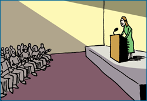
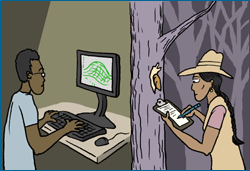
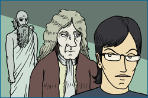

Most large-scale human endeavors involve a supporting community. From high schools to dairy farms, political parties to professional snowboarding competitions — they all rely on diverse communities with different members fulfilling different roles. And science is no exception. The scientific community is made up of researchers, students, lab technicians, the people who work at scientific journals, employees at funding agencies — in short, anyone who helps science govern itself and move forward.
In How science works, we briefly summarized some of the nitty-gritty, day-to-day functions served by the scientific community. Here, we elaborate on those and discuss broader functions served by the community:
Inspiration. Community-level interactions encourage innovation and spark ideas about new lines of evidence, new applications, new questions, and alternate explanations. For example, James Watson and Francis Crick came up with a new and brilliant idea for the structure of DNA, but that idea did not come out of the blue. The idea was sparked by evidence that many other scientists (including Linus Pauling, Erwin Chargaff, Maurice Wilkins, and especially Rosalind Franklin) discovered and made available to the scientific community prior to the Watson/Crick model.

Motivation. Some people are driven by the thrill of competition — swimmers swim faster, politicians campaign harder, and students study more for college entrance exams when they know that they are competing against others. Scientists are no exception. Some scientists are motivated by the sense of competition offered by the community (e.g., rival teams racing to unlock the sequence of the human genome). Similarly, the community offers scientists the prospect of recognition from their peers. In science, achievement is usually measured, not in terms of money or titles, but in terms of respect and esteem from colleagues. The idea of uncovering a new line of evidence relating to the Big Bang is motivating in and of itself, but many scientists also appreciate the respect from other scientists that making such a discovery would engender. In science, both competition and recognition from the community encourage going out on a limb, testing a new idea, creative thinking, and plain old hard work.
RACING FOR THE HUMAN GENOME
In the 1980s, scientists set their sights on what seemed to be a lofty, but for the first time, achievable goal: to record the DNA sequence of the three billion or so base pairs that make up the human genome. In 1990, the publicly funded Human Genome Project (HGP) began its work in earnest, using a tried and true sequencing technique that begins with a map of genetic landmarks on each chromosome. However, in 1998, that effort was challenged by a private company, Celera. Celera proposed to decode the genome using a new so-called shotgun technique that didn't require an initial landmark map — and to complete its work in just three years, four years before the HGP would complete their sequence! This competition inspired the HGP to accelerate their work and move their target completion date up to rival Celera's. In the end, this rivalry propelled both efforts forward. Both teams published their working drafts of the genome ahead of schedule in February of 2001 — and when they did, the private team's paper had more than 100 authors and the HGP's had more than 1000. Talk about teamwork!

Division of labor. Science is simply too broad for an individual on his or her own to handle! Even research within a single narrow field (e.g., cellular biology) may cover an immense array of specialized topics, from the chemical details of decoding DNA to cellular communication. That specialized knowledge is divided up among different researchers, who may then share their expertise by working together. Collaborations and division of labor are increasingly important today, as our scientific understanding, techniques, and technologies expand. There's simply more to know than ever before! And as we learn more about the world, more research is performed at the intersections of different fields: chemical reactions within cellular organelles, the mathematics of protein folding, the interplay between Earth's geologic history and biological evolution, or the physics of snail locomotion. Such cross-disciplinary studies are better approached by a team of experts from different fields than by a single individual struggling to keep up-to-date with too many topics.

A cumulative knowledge base. Science builds on itself. We wouldn't have general relativity if we didn't have classical mechanics. And we wouldn't have classical mechanics if we didn't have Galileo's studies of motion and revolutionary ideas about astronomy. A similar deep history spanning hundreds of years could be given for almost any scientific idea. The scientific community provides the cumulative knowledge base on which science is built.
Scrutiny. Participating in the scientific community involves scrutinizing the work of others and allowing your own work to be similarly evaluated by your peers. This system of checks and balances verifies the quality of scientific research and assures that evidence is evaluated fairly.